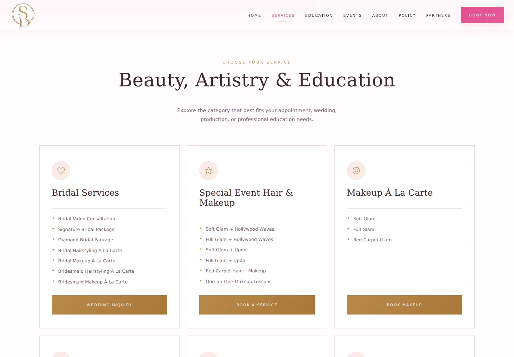
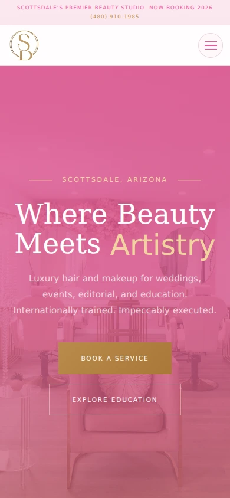

Prospective clients
People comparing hair and makeup services and deciding how to book or inquire.
Spark Beauty Co. needed a website that expressed its brand clearly and made it easier for potential clients to explore services and take the next step.
4 min read · Original project artifacts

Spark Beauty Co. is a Scottsdale beauty business offering hair and makeup services for weddings, special events, and commercial work, alongside beauty education. Its website needed to communicate the brand while helping visitors understand which service or inquiry path was relevant to them.
My engagement connected digital strategy with website design and implementation. The goal was a more cohesive experience from first impression to the next step in booking, with the service offering and founder’s story presented clearly.
I translated the client’s business goals into website structure, copy, layouts, styling, and calls to action. The work included organizing services, implementing responsive pages, aligning the presentation with the brand, and incorporating client feedback.
This was a client-facing build, so the role involved both making design decisions and explaining how those decisions supported the business. The screenshots in this case study show the redesign files supplied with the project, including the homepage, service presentation, and mobile layout.
A visitor looking for wedding services is not necessarily looking for the same information as someone booking event makeup or exploring education. The site had to introduce a broad offer without making the next action difficult to find.
The design also needed to maintain a distinctive beauty brand across different screen sizes. A recognizable visual identity would be less useful if mobile visitors could not read the service information or reach the appropriate inquiry path.
People comparing hair and makeup services and deciding how to book or inquire.
Visitors with project-specific needs that called for a more detailed inquiry.
People exploring training and professional beauty education.
I structured the experience around the business’s main areas, with navigation for services, education, events, founder information, policies, and partners. This gave visitors recognizable routes into the information they needed.
The service page made categories visible and connected them with suitable next steps. The layout shown here groups bridal services, special-event offerings, and other appointment types rather than presenting every visitor with an undifferentiated list.
The redesign uses a pink, white, and gold palette, expressive display type, supporting body text, and salon imagery. I connected those choices across the header, hero, buttons, service cards, and supporting pages.
The homepage brings the visual identity together with a short explanation of the offering. Prominent booking and education actions let the first screen do more than establish a mood: it also introduces where a visitor can go next.
The site provides booking and inquiry entry points near the service information. Different pathways support different levels of commitment, from exploring a service to starting a more detailed conversation about a wedding or commercial request.
My focus was the relationship between information and action. A call to action is more meaningful when the visitor has enough context to understand what they are choosing.
I implemented responsive styling so the brand, page hierarchy, and calls to action carried into a narrow screen. The mobile example shows the navigation condensed into a menu and the main actions stacked for a smaller layout.
Client communication and refinements were part of the work. The deliverable was a functioning redesign build with a coherent services and inquiry journey, not only a set of visual mockups.
The screenshots make several design decisions visible and connect them with the intended customer journey.
| What mattered | The response | Why it mattered |
|---|---|---|
| Visitors could arrive with different service needs. | Use clear categories and dedicated service or inquiry paths. | Help each audience identify the relevant next step. |
| The brand needed consistency across touchpoints. | Carry the palette, typography, and imagery across the page system. | Create a cohesive impression of the business. |
| The homepage had to introduce both services and education. | Present a concise offer with distinct primary actions. | Connect the first impression with useful navigation. |
| The same journey needed to work on a phone. | Adapt navigation, spacing, and button layouts for narrow screens. | Keep key actions accessible in the mobile experience. |
These captures show the supplied redesign build. The homepage establishes the brand, the service page organizes the offer, and the mobile view shows how the experience adapts.


The website work contributed to a reported 25% increase in bookings completed through the site, as recorded in my updated résumé. The available material does not provide a before-and-after analytics export, so the result is presented as a reported client outcome.
The concrete deliverable was a responsive, brand-aligned website build that connected service information, founder storytelling, and booking or inquiry actions. The screenshots show that redesign at desktop and mobile sizes.
This project brought together the parts of client work I enjoy: understanding the business, making the information easier to navigate, and carrying the design through implementation.
For a future iteration, I would pair the booking result with a clearer measurement plan for individual inquiry paths. That would help distinguish which service pages and actions contribute most to completed bookings.
{kind=link}
{kind=link}